鸡与数学
现实生活中的趣味问题
百禽问题
在解决100只鸡的问题时，我们分别根据鸡的数目和价格列出了两个方程。在本题中，我们需要采用同样的方法。设鸭子、鸽子和母鸡的数量分别为x、y、z，则：
（1）x + y + z = 100
（2）2x + y/2 + z/3 = 100
将方程（2）乘以6，消去分母：
（3）12x + 3y + 2z = 600
将方程（1）乘以2，把它变成一个包含2z的方程：
（4）2x + 2y + 2z = 200
做完上述工作，就可以消去2z，把两个方程合二为一了。整理方程（3），就可以得到2z = 600 – 12x – 3y，代入方程（4），就有：
2x + 2y + 600 – 12x – 3y = 200
整理后可得：
（5）10x + y = 400
我们已经知道x和y都是整数，而且都小于100。我们还可以推断出y一定是10的倍数。推理过程如下：我们知道10可以整除400，由此可知10肯定也可以整除方程的另一边，即10x + y。我们还知道10可以整除10x，由此可以推断出10肯定可以整除y，否则10就不能整除10x + y，这与前面的推理结果矛盾。
小于100且是10的倍数的数有：10、20、30、40、50、60、70、80和90。y不可能是70、80或90，否则与之对应的x只能是33、32和31，这样一来，鸭子与鸽子的数量之和，即x和y的和，就会大于100。所以，符合条件的6个解应是：10、20、30、40、50和60。与之对应，鸭子、鸽子和母鸡的数量分别为：
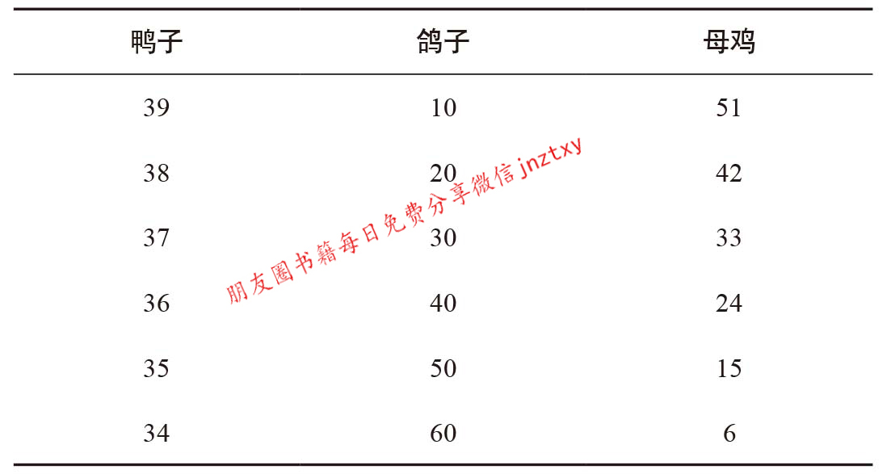
7-11便利店
我们需要确定4件商品的价格，但题目中与之有关的语句只有两个——这些商品价格的总和以及它们的乘积。
我们还是先列方程吧，设这4件商品的价格分别是a、b、c、d。收银员告诉我们：
（1）a×b×c×d = abcd = 7.11
（2）a + b + c + d = 7.11
根据算术基本定理，所有整数都可以表示成若干素数的唯一乘积形式。
这条定理将发挥重要作用，但目前我们还无法加以应用，因为定理涉及的是整数，而方程（1）中的乘积是小数7.11。因此，我们需要将方程（1）变成关于整数的方程。为了实现这个目标，我们需要采用替换法。
令A = 100a，B = 100b，C = 100c，D = 100d。将这4个数相乘，就会得到：
（3）A×B×C×D = ABCD =100 000 000ab cd
我们已经知道abcd = 7.11，因此
（4）ABCD = 711 000 000
有了这个数，就好办了。算术基本定理告诉我们，711 000 000可以表示成若干素数的唯一乘积形式，也就是说，这些素数的乘积等于711 000 000。我们可以通过人工计算，也可以使用计算机（这个办法更好！）找出这些素数：
711 000 000 = 2×2×2×2×2×2×3×3×5×5×5×5× 5×5×79
也就是说：
ABCD = 2×2×2×2×2×2×3×3×5×5×5×5×5×5×79
因此，A、B、C、D这4个数都是由上面这些素数构成的。现在要解决的问题是，确定哪些数的乘积是A，哪些数的乘积是B，哪些数的乘积是C，哪些数的乘积是D。换言之，要确定如何将这些素数分配给A、B、C、D。
接下来，我们考虑方程（2）。将该方程乘以100，得到关于A、B、C、D的第二个方程：
（5）100a +100b + 100c + 100d = A + B + C + D = 711
换句话说，在将上面这些素数分配给A、B、C、D后，还要保证A、B、C、D的和等于711。
在这里我要告诉你们一个坏消息：我们没有捷径可走，只能采用试错法，一个一个地尝试。例如，假设A = 2×2×2×2×2×2 = 64，B = 3×3 = 9，C = 5×5×5×5×5×5 = 15 625，D = 79。因为A + B + C + D = 15 777，所以这个假设不成立。
这一步在很大程度上要靠运气，但你会逐渐对A、B、C、D这4个数的大小产生一种模糊的感觉。我们学到的知识也会对猜测起到一定的作用。这些素数中有很多是5，所以A、B、C、D中或许有两三个数是5的乘积。5的乘积相加之后，和的末位数只能是0或者5，因此第4个数的末位数一定是6或者1。这个数是79的倍数，且末位数是6或者1，符合这两个条件的最小数字是多少呢？由此，我们可以确定A、B、C、D的值是：
A = 79×2×2 = 316
B = 5×5×5 = 125
C = 5×3×2×2×2 = 120
D = 5×5×3×2 = 150
所以，商品的价格a、b、c、d分别为3.16英磅、1.25英磅、1.20英磅和1.50英磅。
这道题最巧妙的地方不在于烦琐的试错过程，而在于根据数字7.11确定4件商品价格时采用的方法。
三个酒坛
知道台球桌问题的解法后，本题也就迎刃而解了。
两个水桶
我希望你是利用台球桌来解这道题的。
第一幅图表现的是从 (7,0)（先将7加仑的水桶装满）开球后的一系列步骤，第二幅图选择的起始点是(0,5)，即先将5加仑的水桶装满。在第一幅图中，小球与球桌相交于横坐标为6的点之前，与球桌边沿碰撞的次数较少，因此通过这个方法在水桶里装6加仑水，装水的次数最少。
在第一幅图中，反弹点的坐标，也就是每次装水的加仑数，分别为(7,0)、(2,5)、(2,0)、(0,2)、(7,2)、(4,5)、(4,0)、(0,4)、(7,4)和(6,5)。因此，最快的做法是先在第一个桶中装7加仑的水，第二个桶中不装水。然后，将第一个桶中的水装进第二个桶，装满5加仑后，第一个桶中还剩2加仑的水。就这样，不断地来回装水。当最后一次把第二个桶装满之后，第一个桶中就恰好剩下6加仑的水。
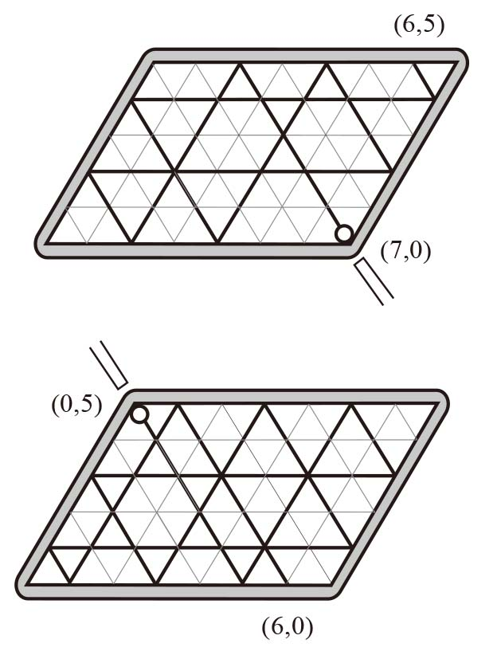
加奶咖啡问题
假设瓶里有100毫升咖啡，碗里有100毫升牛奶。再假设我们将10毫升咖啡倒入牛奶，现在，碗里一共有110毫升牛奶和咖啡……
好了，就此打住吧！
是的，我们可以随意假设一些数据，计算出最后的结果，再推广至所有情况。但是，还有一种更快、更简洁的方法。
我们先要明确一点：两种液体混合到一起后不会改变各自的化学属性，牛奶和咖啡的总体积保持不变。每个容器中的液体都只能是咖啡或者牛奶，没有第三种物质。
来回倒两次后，瓶里装的液体体积与开始时相同，但现在里面既有一定体积的咖啡，又有一定体积的牛奶。还有一些咖啡去哪儿了？都被倒进碗里了，因为咖啡的总量没有变化。所以，瓶里的牛奶与碗里的咖啡数量一定相等。瓶的容积、碗的容积以及每次倒了多少牛奶或者咖啡，都不会影响最后的答案。
把牛奶、咖啡换成饼干，把瓶子、碗换成罐子，理解起来可能会更容易一些。一个罐子里装有巧克力饼干，另一个罐子里装的是椰子味饼干。抓起一把巧克力饼干，放进装有椰子味饼干的罐子里。然后，从这个罐子里再抓起同样数量的饼干（由于罐子里既有巧克力饼干，也有椰子味饼干，所以这一次抓起的饼干中两种口味都有），再放入装巧克力饼干的罐子。
此时，装巧克力饼干的罐子里肯定装有巧克力饼干，还可能有椰子味饼干。不过，可以肯定的是，这个罐子里的椰子味饼干与另一个罐子里剩余的巧克力饼干一样多。
水和酒
如果每次只倒半品脱的酒水混合物，那么每个坛子里都不可能正好有一半水、一半酒。要使酒和水各占一半，唯一的办法就是将一个坛子里的酒水混合物全部倒到另一个坛子里。
不要利用具体数字来解这道题，否则你很快就会陷入分数的泥潭……
我们可以这样考虑。当你将高浓度的酒倒进装有低浓度的酒的坛子里时，第一个坛子里酒的浓度仍然高于第二个坛子，因为第一个坛子的酒的浓度没有变化，而第二个坛子里酒的浓度则是倒酒之前两个浓度的某个中间值。
起初，一个坛子里的酒的浓度为100%，另一个坛子里的酒的浓度为0。由于开始的时候这两个坛子里的酒的浓度不同，所以每次倒酒（无论是从浓度高的坛子倒向浓度低的坛子，还是相反）之后，两个坛子中酒的浓度仍然有一定差别。由此可知，这两个坛子里的酒与水永远不会达到各占一半的比例。
精彩一刻钟
一旦你知道在沙漏里的沙流完后可以立即将它翻转过来，你肯定会恍然大悟。
首先，像示例中采用的那个方法一样，把两个沙漏同时翻转过来。但是，等7分钟沙漏里的沙流完之后，我们再将它翻转一次。当11分钟的沙漏里的沙流完时，7分钟沙漏里的沙已经流了4分钟。此时，第三次翻转7分钟沙漏！因为这个沙漏里的沙还可以流4分钟，所以从开始到这个沙漏里的沙最后流完，正好耗时一刻钟。
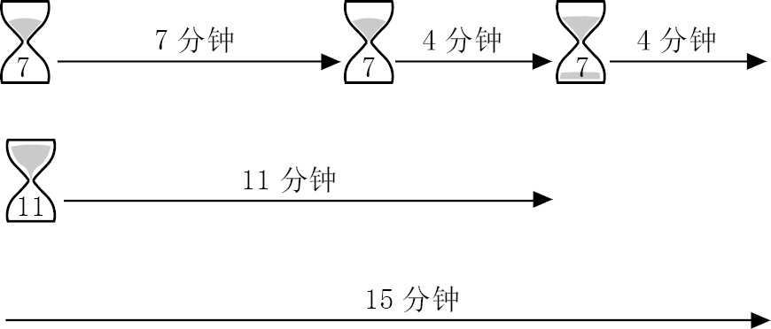
令人头晕眼花的引信
（1）根据题意，将引信一分为二后，并不能保证半截引信正好可以燃烧半小时。同理，如果从引信中剪去1/4的长度，剩下部分也不一定正好可以燃烧45分钟。因此，要解决这个问题，必须从多个角度开动脑筋。
如果我们点燃引信的一端，30分钟后再将它熄灭，那么不管剩余部分有多长，再次点燃它会在正好30分钟后燃尽。如果同时点燃引信的两端，30分钟后引信就会燃尽，尽管一端燃烧的距离比另一端长。
因此，我们可以取两根引信，一根引信同时点燃两端，另一根则只点燃一端。30分钟后，一根引信燃尽，而第二根引信还可以燃烧30分钟。此时，点燃第二根引信的另一端。由于两端都被点燃，所以这根引信将在15分钟后燃尽。此时，距离它第一次被点燃正好过去了45分钟。
（2）从一端点燃后，一根引信可以燃烧一小时。两端同时点燃，可以燃烧半小时。如果一根引信可以从三个端点同时点燃，它燃烧的时间就是一小时的1/3，即20分钟，因为从三处同时燃烧，意味着引信燃烧的速度变成了原来的三倍。
但是，一根引信只有两个端点，不可能有三个端点。你可能也发现这个问题了吧……
不过，我们可以想办法绕开这个小问题。将引信分成两段，点燃其中一段引信的两头，同时点燃另一段引信的一头。这样，我们就如愿以偿地得到了三个燃烧点。
现在，我们需要保证整个引信一直保持三个燃烧点。一旦某一段引信燃尽，我们就需要将另一段剪成两段，然后点燃它们，并保证其中一段从两头燃烧，另一段从一头燃烧。重复这个步骤，直到引信短到无法再剪断为止。由于在引信几乎燃烧殆尽之前一直保持三个燃烧点，所以燃烧时间大约为20分钟。
偏倚的硬币
第一个提出（并解决）这个问题的人是约翰·冯·诺依曼（John von Neumann）。这位出生于匈牙利的数学天才不仅独自开创了一些新的领域，还几乎在他触及的所有科学领域都做出了显著的贡献。
偏倚硬币落地后，正面与反面朝上的概率不是各一半。不过，两次抛投一枚偏倚硬币，先得到正面再得到反面，与先得到反面再得到正面的可能性是相同的。（更正式的说法是：如果正面的概率是a，反面的概率是b，那么先正面后反面的概率是a×b，先反面后正面的概率是b×a，与a×b相等。）因此，如果用偏倚硬币模拟公平硬币猜“先正后反（HT）”或“先反后正（TH）”，那么抛投两次后的可能结果是HT、TH、HH或TT。如果得到的是后两种结果，即两次抛投后硬币都是同一面朝上，则忽略不计，重新抛投两次。也就是说，如果得到HT或TH，则此轮结束；如果得到HH或TT，则重新抛投，直到得到HT或TH。得到HT或TH的可能性各占一半，所以借此能够模拟公平硬币的效果。
分面粉
第一次称量：将面粉平分到天平的两个托盘中，使每个托盘各装500克。
第二次称量：把其中一份500克面粉放到一边，把剩下的那堆500克面粉分到两个托盘中，使每个托盘各装250克。
第三次称量：把其中一份500克面粉放到一边。利用两个总质量为50克的砝码，从其中一堆250克面粉中称出50克，则剩下的面粉重200克。把其余的面粉放到一起，正好重800克。
巴歇砝码问题
我们知道，如果砝码只能放到一个托盘中，那么利用下面这组6个砝码，就可以称量1~63千克的所有整千克数：
1，2，4，8，16，32
现在要解决的问题是，如果两个托盘均可以放砝码，称量1~40千克的所有整千克数，最少需要多少个砝码？我们从1千克开始，看一看称量每个整千克数最少需要多少个砝码。只在迫不得已的时候，我们才添加新砝码，且尽可能选择大规格的新砝码。
我们把天平的两个托盘分别称作托盘A和托盘B。
在托盘A上放置1千克的重物后，需要在托盘B上放置一个1千克的砝码，天平才能保持平衡。也就是说，到目前为止，需要的砝码是：1。
在托盘A上放置2千克的重物后，需要在托盘B上放置一个2千克的砝码，天平才能保持平衡。我们还可以采用另一种方法，并引入一个更大的新砝码。由于砝码组合中已经有1千克砝码，所以我们可以在托盘A中放上2千克重物和1千克砝码，然后在托盘B上放一个3千克砝码，使天平保持平衡。
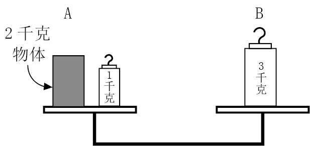
除此以外，我们无法用两个不同的整千克数砝码称量2千克的重物，因此砝码的组合变为(1,3)。
利用1千克和3千克砝码，我们最大可以称量4千克的重物。在天平两边均可放砝码的前提下，称量5千克的重物，可以使用的最大新砝码是多少千克呢？
如果我们按照前面的方法，在A上放5千克的重物以及目前所有的砝码，即1千克 + 3千克 = 4千克砝码，则托盘B上需要放9千克的砝码，才能让天平平衡。
至此，砝码的组合变为(1,3,9)。
利用1千克、3千克和9千克砝码，我们可以称量的重物最多为13千克。在天平两边均可放砝码的前提下，称量14千克的重物，可以使用的最大新砝码是多少千克呢？
根据以上推理，答案是14千克 + 13千克 = 27千克。
于是，砝码的组合变为(1,3,9,27)。
这组砝码最大可以称量40千克的重物。因此，如果天平两边都可以放砝码，砝码的个数就可以从6个减少到4个。
你可能发现了一个规律：如果砝码只能放到一个托盘上，砝码的规格就是一个递增数列，其中每一项都是前一项的两倍。如果两个托盘都可以放砝码，则新砝码的规格是前一个砝码的3倍。二倍递增数列与二进制数相对应，同理，三倍递增数列与三进制数（仅使用0、1、2这三个数字的数字系统）相对应。
例如，三进制的1 020表示个位为0，三位是2，九位是0，二十七位是1。因为6 + 27 = 33，所以三进制中的1 020等于十进制中的33。
一枚假硬币
我们把这些硬币分别编为1~12号。
第一次称量时，在天平两边分别放上1~4号硬币和5~8号硬币。
如果天平平衡，则说明假硬币是剩余4枚硬币（即9~12号）中的一枚。
从剩余4枚硬币中取3枚，再从第一组（已确定是真硬币）中任取3枚，分别放到天平两边。假设选取的两组硬币分别是1、2、3号与9、10、11号。
如果天平平衡，则说明第12号硬币是假硬币。第三次（也是最后一次）称量时，从其余硬币中任取一枚，与假硬币一起分别放到天平两边，以确定假硬币与真硬币哪个更重。
如果天平不平衡，则说明假硬币是第9、10或11号。假硬币比真硬币轻还是重，取决于装9、10、11号硬币的托盘是上升还是下降。接下来，我们采用在讨论巴歇砝码问题时提到的那个方案，从9、10、11号硬币中任取两枚，放到天平两边，第三枚硬币暂时放到旁边。如果天平平衡，则放到旁边的那枚硬币是假硬币。如果我们已经知道假硬币较轻，那么在天平不平衡时，升起的那个托盘里装着的就是假硬币。如果我们已经知道假硬币较重，那么在天平不平衡时，下降的那个托盘里装着的就是假硬币。
如果第一次称量1~4号硬币和5~8号硬币时天平不平衡，则解决办法要复杂一些。
假设装1~4号硬币的托盘比装5~8号的托盘低。
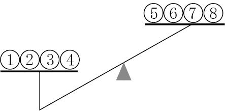
我们可以断定9、10、11和12号都是真硬币。
第二次称重时，从这些真硬币中选取一枚（比如9号），再从下降的托盘里取两枚硬币（比如1号和2号），然后把它们一起放到天平的一个托盘上。再从下降的托盘里取出剩下的两枚硬币（3号和4号），从上升的托盘里取一枚硬币（比如5号），将它们一起放到天平的另一个托盘上，进行称量。这一次称重不涉及6、7、8号硬币。
第二次称重有三种可能的结果：
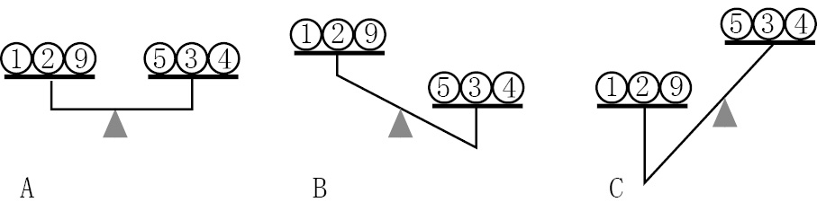
（A）天平平衡。可以断定假硬币是6、7、8号中的一个。第三次称重时比较6号与7号的重量。如果天平平衡，则说明假硬币是8号，而且可以断定假硬币较轻，因为第一次称重时，装有8号硬币的托盘升高了。如果6号上升，则6号是假硬币；如果6号下沉，则7号是假硬币。
（B）天平左边升高。可以断定假硬币是1、2、3、4、5号中的一个，因此可以排除6、7、8号。
如果假硬币是1、2、3、4号中的一个，则说明假硬币比真币重，因为第一次称重时装有1、2、3、4号硬币的托盘下沉了。我们进而可以断定，假硬币要么是3号，要么是4号。第三次称重时，比较3号与4号的重量就可以确定哪个是假硬币。
（C）天平右边升高。同（B）一样，可以断定假硬币是1、2、3、4、5号中的一个，同时排除6、7、8号。同样，如果假硬币是1、2、3、4号中的一个，则说明假硬币比真硬币重，因为第一次称重时装有1、2、3、4号硬币的托盘下沉了。我们进而可以断定，假硬币要么是1号，要么是2号。
但是，还有一种可能性没有考虑到。既然第一次称重时，装有5、6、7、8号硬币的托盘上升，所以5号也可能是假硬币，而且比真硬币轻。
因此最后一次称重时，比较1号与2号的重量。下沉的那个托盘里装的就是假硬币。如果天平平衡，则5号是假硬币。
如果第一次称重时，装有1、2、3、4号硬币的托盘上升，而装有5、6、7、8号硬币的托盘下沉，则推理过程同上，但在称重时需要将1、2、3、4号与5、6、7、8号对换。
一摞假硬币
当然只需要一次！
从第一摞硬币中取一枚，从第二摞中取两枚，从第三摞中取三枚，从第四摞中取4枚，以此类推，直到最后一摞，然后一起放到天平的托盘里。此时，托盘里一共有1 + 2 + 3 + 4 + …+ 10共计55枚1英镑的硬币。
你知道每枚硬币的重量，因此可以算出55枚硬币的总重量。天平读数与55枚硬币重量的差（以克为单位）就是那摞假硬币的编号。如果差是1克，则说明托盘里只有一枚假硬币，进而表明第一摞硬币是假硬币；如果差是2克，则说明托盘里有两枚假硬币，进而表明第二摞硬币是假硬币，以此类推。
从勒阿弗尔到纽约
第一次听到这道题时，我首先的反应是答案是7。显然，那些著名的法国数学家在第一次听到卢卡斯先生介绍这道题时，肯定和我的反应一样。
整个航程需要7天才能完成。因此，与你擦肩而过的客轮就是当天、第二天，直到你靠岸前一天从纽约出发的那些客轮，一共是7班。
错了！前一周从纽约出发的那些客轮不需要考虑吗？它们正在海上航行，你在乘船前行时，肯定会与它们相遇。正确的答案是：你刚离开勒阿弗尔，就会在港口遇到一班客轮（这班客轮一周前从纽约出发，正好于当天中午抵达）；你还将在海上遇到13班客轮；航行一周后，你将于中午抵达纽约，并在那里遇到即将离港的最后一班客轮。
下图可以帮助我们更好地理解这道题：
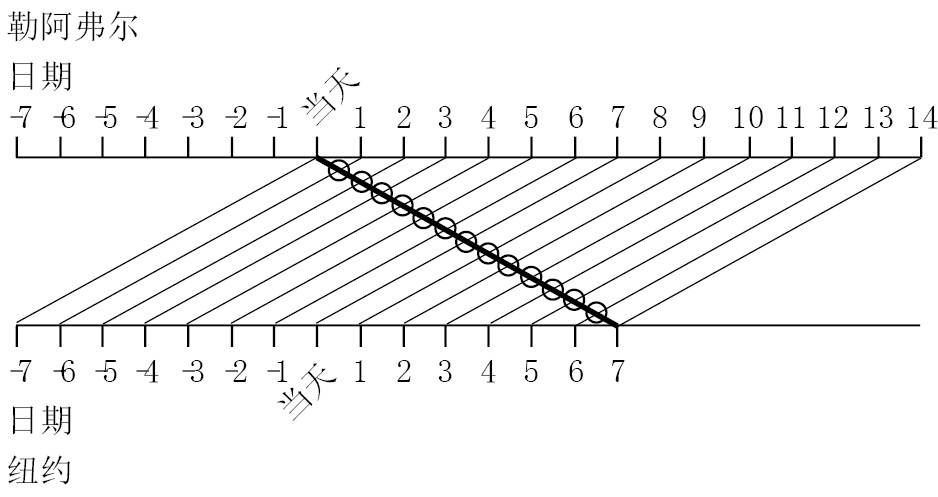
如果所有客轮以恒定速度前进，你每隔12小时就会遇到一班，分别是每天中午和午夜（勒阿弗尔时间）。
往返旅程
我们考虑出发时顺风、返回时逆风的情况。
凭直觉，我们会认为顺风时的推动作用与逆风时的阻碍作用应该可以相互抵消，因为风在一个方向上的作用力与它在另一个方向上的作用力正好相等。假设风速为W，那么出发时飞行速度增加了W，返程时飞行速度又减少了W。
然而，这个问题需要考虑的不是飞行速度，而是飞行时间。速度加快使得时间减少的量，比速度变慢使得时间增加的量更少，因为飞机以低速飞行的时间更长。
下面我们借助具体数字来考虑这个问题：
飞机以每小时500英里的速度飞行时，一小时飞行了500英里。
如果飞行速度每小时增加了100英里，则相同距离所需的飞行时间就会减少10分钟。（时间=距离/速度。如果距离为500英里，速度为每小时600英里，即每分钟10英里，则航行时间为500/10 = 50分钟。）
如果飞行速度每小时下降了100英里，则相同距离所需的飞行时间就会增加15分钟。（如果距离为500英里，速度为每小时400英里，则航行时间为500/400 = 1.25小时，即75分钟。）
因此，当距离是500英里时，在风速是每小时100英里的情况下往返旅程所需的时间比无风时要多花5分钟。
但是，即便不费脑力完成上述计算，我们也可以想象风速等于飞机飞行速度时的情况。飞机完成第一个单程的时间将减半，但返程时的飞行速度将为0，也就是说，飞机根本无法起飞！
当然了，这是一种极端情况，但从中可以看出某种规律。无论飞机速度提升多少，你也不可能节约超过1小时的时间。与之相反，如果让飞机速度降至某个固定值，那么你有可能需要付出无限长的时间。综上所述，如果去程顺风、返程逆风，那么完成往返旅程需要的时间要比无风时多。 [此书分享V信wsyy 5437]
但是，如果遇到的是侧向风呢？侧向风可以分解成两个部分：顺风（或逆风）以及与航向垂直的风。我们已经知道前者会增加往返旅程所需时间，那么后者会产生什么效果呢？如果遇到垂直的侧向风，飞机必须沿与风成一定角度的方向飞行，才能保持笔直的航线。也就是说，飞行速度并未全部用于完成由A至B的飞行，其中一部分需要用来抵消风的影响。因此，去程与返程需要的飞行时间都会增加。
由此可见，往返旅程的最佳条件是无风天气。
里程数问题
你的第一反应肯定是，汽车行驶1 000英里之后，短程里程表将恢复为000.0，此时两个里程表的前4位数才能再次相同。
汽车在此前的基础上继续行驶了876.6（1 000 – 123.4）英里，仪表盘的读数如下图所示：
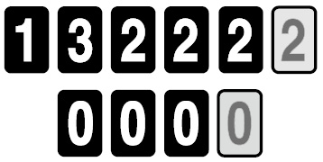
继续行驶130英里之后，两个读数的前两位数相同：
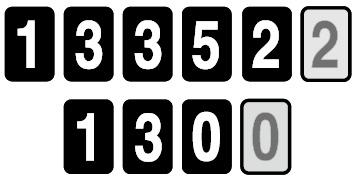
继续行驶3.5英里，此时的读数就是我们要找的答案。
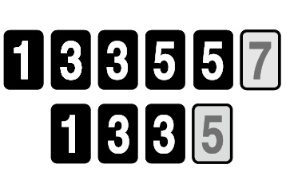
所以，汽车再行驶1 010.1英里，两个里程表读数的前4位数才会再次相同。
超越
这两个问题都不难，但正因为简单，我们懒惰的大脑往往不愿意认真思考。
（1）在超过第二名之后，你现在的名次是第二名。
（2）不可能出现超越最后一名的情况。如果后面还有其他选手，那么这位被超越的选手就不可能是最后一名。
跑步的方式
这又是一道违背直觉的趣题。达芙妮的速度是每英里8分1秒，康斯坦茨则以每英里8分钟的速度匀速前进，达芙妮似乎不可能击败康斯坦茨。
当然，达芙妮肯定有胜出的可能，否则就不会有这道题了。这位每英里都比对手慢1秒的选手只要经过精心设计，就有可能在26.2英里的比赛中胜出。
我们先来看达芙妮在比赛中的跑步方式。她的速度不是恒定不变的，而是以同样的时间跑完每个1英里的赛程。她是如何做到的呢？
下图展示的是选手在比赛中的速度曲线。从图中可以看出，这位选手在完成每1英里的赛程时，先以较快的恒定速度跑完长度为a的部分，然后以较慢的速度跑完剩余的部分。如果该选手重复采用这个策略完成整个比赛，那么总的来说，她的速度是有变化的，但是跑完每英里所花的时间却保持不变。因为在每个1英里的赛程中，其中的a部分都是以高速完成的，而其余部分则是以低速完成的。
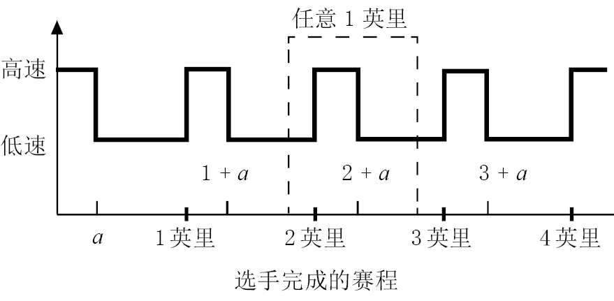
如果达芙妮用这个方法跑马拉松，我们就可以帮她做一些调整，以取得最佳成绩。马拉松全长26.2英里，达芙妮每跑完1英里，就会比康斯坦茨多用时1秒钟，因此在跑完26英里时，她需要多用时26秒。也就是说，达芙妮必须在余下的0.2英里赛程中弥补这26秒的差距。
我们帮达芙妮想出了一个方法：在完成每1英里的比赛时，以较快速度跑完前0.2英里，然后以较慢速度跑完剩余的0.8英里。接下来，我们必须将讨论的焦点由距离变为时间。假设达芙妮用x秒跑完前0.2英里，用y秒完成剩余的0.8英里。那么她跑完每1英里所花的时间为x + y秒。
根据题意，达芙妮跑完每1英里所需时间为8分1秒，即481秒。因此，我们可以列出下列方程：
（1）x + y = 481
康斯坦茨跑完每1英里需要8分钟，因此她跑完马拉松一共需要26.2×8×60秒，即12 576秒。
现在假设达芙妮跑完马拉松所花的时间仅比康斯坦茨少1秒，即12 575秒。因为她的整个比赛包含了27个前0.2英里和26个后0.8英里，所以我们可以列出下面这个方程：
（2）27x + 26y = 12 575
我们很容易就能解出这组方程。由方程（1）可知，y = 481 – x。代入方程（2），求出x = 69秒，y = 412秒。因此，如果达芙妮在每1英里的比赛中用69秒迅速跑完前0.2英里，再用412秒跑完剩余部分，那么虽然按照每英里比赛用时来计算，她都比不上康斯坦茨，但最终她却能以1秒钟的微弱优势击败对手。
干瘪的土豆
答案是50千克，土豆的重量减少了一半！这道题非常有意思，因为答案与我们的直觉相悖。
但是，这道题涉及的计算过程却非常简单。
水在土豆中占99%的比例，我们不妨把剩余的1%称作“土豆精华”。
当土豆重量是100千克时，其中包含1千克的“土豆精华”和99千克的水。“土豆精华”与水的比例关系是1∶99。部分水分蒸发后，土豆中水的比例降为98%。此时，“土豆精华”与水的比例关系变成了2∶98，即1∶49。由于“土豆精华”的重量仍然是1千克，所以水的重量肯定减少至49千克，土豆总重量则变为1千克+49千克=50千克。
这道题告诉我们，计算比例关系时很容易出错。出题人处心积虑地营造了一种变化不大的错觉：由99%变为98%，只下降了1/99。但是，与之相应的变化却是由1%变成2%，增加了一倍。
在涉及百分比问题时，借助具体数字加以考虑往往会简单得多。想象一下，如果用下列方式重新表述这道题，会有什么样的效果呢？房间里有1名女性和99名男性。在一部分男性离开之后，房间中女性的百分比由1%变成了2%。请问有多少名男性离开了房间？答案是原有总人数的一半，正好是50人。
涨薪水的方式
或许你单凭猜测也能做对这道题。B计划看上去吝啬得多，所以我们几乎可以立马判定它其实比不上A计划。
（1）A计划
起始年薪为10 000英镑。每6个月薪水将增加500英镑。也就是说，第一个半年的薪水为5 000英镑，第二个半年的薪水将增加500英镑，第三个半年的薪水再增加500英镑，以此类推。我们把前两年的薪水情况列表如下：
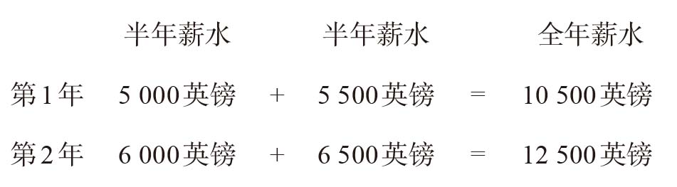
（2）B计划
起始年薪也是10 000英镑，但加薪要等到年底。因此，第一年的薪水是10 000英镑。此时，B计划已经不及A计划了。按照B计划，第二年的薪水有一个很大的增幅，数额为2 000英镑，因此到第二年年底，薪水变为12 000英镑。
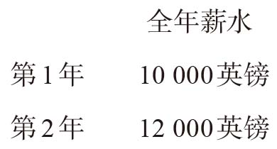
大幅涨薪之后，B计划仍然比不上A计划，而且这种态势将继续保持下去。结果就是，幅度较小但频率较高的累积涨薪的效果超过了一年一度的大幅涨薪。
棘手的问题
如果下刀的位置是随意选择的，那么木棒上任意一点被选中的可能性都是相同的。
因此，下刀位置在木棒左半截儿和右半截儿的可能性各占一半。（可以不考虑木棒的中点，因为在这个位置下刀将把木棒砍成长度相等的两截儿，就不存在哪一截儿更短的问题了。）
现在，我们考虑下刀位置在左半截儿的情况。在木棒被砍成两截儿后，左半截儿比右半截儿短，长度在零与木棒长度的一半之间。事实上，由于左半截儿上的各个点是下刀位置的可能性都相同，所以较短的那一截儿的平均长度是木棒长度一半的一半，即木棒长度的1/4。下刀位置在右半截儿时，结果相同。因此，木棒被砍成两截儿后，短的那一截儿的平均长度是木棒原来长度的1/4。
握手问题
一共有10人参加晚宴：爱德华、露西和4对夫妻。所以，每个人最多可以和9个人握手——除自已以外的所有人。
但根据题意，所有人都不能和自己认识的人握手。我们可以认定所有人都认识自己的配偶，因此每个人最多可以和8个人握手。
9个人给爱德华的答案都不相同，因此他们的答案只能是0、1、2、3、4、5、6、7和8。
考虑回答8的这个人。他（她）肯定与除自己配偶以外的所有人都握过手，因此，除了他（她）的配偶以外，所有人都至少与这个人握过手。由此可知，回答0的人肯定与回答8的人是夫妻。
以同样方式考虑回答7的人。他（她）肯定与除自己配偶及回答0的人以外的所有人都握过手，因此，除了他（她）的配偶及回答0的人以外，所有人都至少与两个人握过手。由此可知，回答7的那个人的配偶肯定是回答1的那个人。
继续上述推理过程，就会发现回答6与回答2的两个人是夫妻，回答5和回答3的人是夫妻。最后剩下的这个人，也就是露西，一共与4个人握过手。
握手礼与亲吻礼
首先考虑握手礼。所有男性都与其他男性握手。因此，如果来宾中只有一名男性，那么这名男宾将与爱德华握手，一共有1次握手。如果有两名男宾，则一共有3次握手——两名男宾彼此之间握手，并各自与爱德华握手一次。如果有三名男宾，则一共有6次握手。请你想一想，为什么一共有6次握手？
所以，我们可以确定来宾中一共有3名男性。
女性与除自己丈夫以外的所有人都行亲吻礼。我们知道一共有3名男宾，露西与每名男宾都要行亲吻礼，即3次亲吻礼。
亲吻礼一共有12次，因此剩余的9个亲吻礼肯定需要由女宾完成。假设有1名女宾，名叫爱娜。如果爱娜是独自赴宴，那么她将与爱德华、露西和3名男宾行亲吻礼，共计5次。如果她是与丈夫同行，那么她将与4人行亲吻礼。因为亲吻礼的次数还不够9次，所以我们再增加一名女宾，名叫比阿特丽斯。
如果比阿特丽斯与所有人都行亲吻礼，那么她将亲吻6人；如果她已经结婚，则与5人行亲吻礼。爱娜与比阿特丽斯的亲吻礼相加之后，能凑齐我们需要的9次吗？答案是肯定的，如果这两个人都与丈夫同行，就会行4 + 5次亲吻礼。至此，我们已经知道答案了：一共有5名客人（包括两对夫妻和一名男宾）出席了晚宴。
对号入座
这道题没有我们想象的那么复杂，不需要计算，也不需要列方程。其难点在于如何选择正确的方法，只要方法得当，问题就会迎刃而解。
问题涉及100个人，我们不妨逐个考虑他们就座的情况。
为避免将人员弄混，我们假设排在队伍第一名的人是A，排在最后一位的是Z。然后，我们可以对问题进行重新表述：如果A任意选择一个座位就座，那么Z可以对号入座的可能性是多少？
在下图中，把座位按顺序排成一行，并分别标记为A的座位、Z的座位（以下分别称作座位A、座位Z）。
考虑一下，如果A坐到座位A上或者座位Z上，会产生什么结果？如果A坐到座位A上，那么其余所有人，包括Z，都可以对号入座。（A的票没有丢失的话，就会是这种情况。）
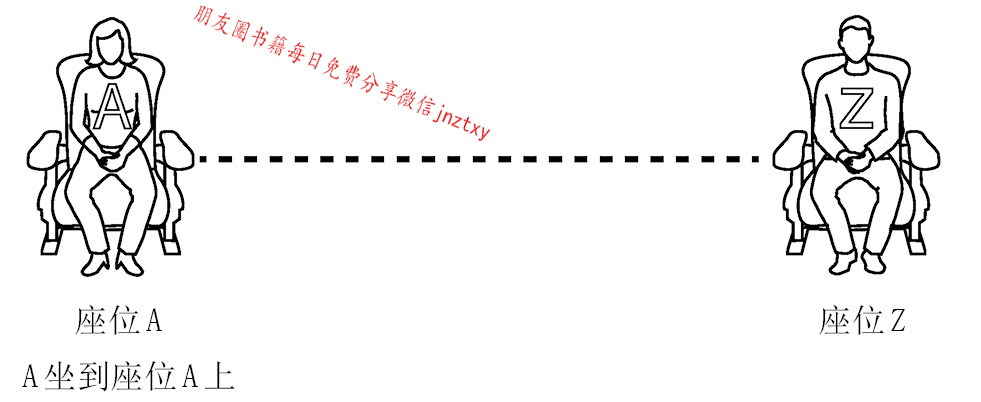
如果A坐到座位Z上，Z显然就不能坐到自己的座位上，因为他的座位已经被A占了。在这种情况下，Z将坐到座位A上。
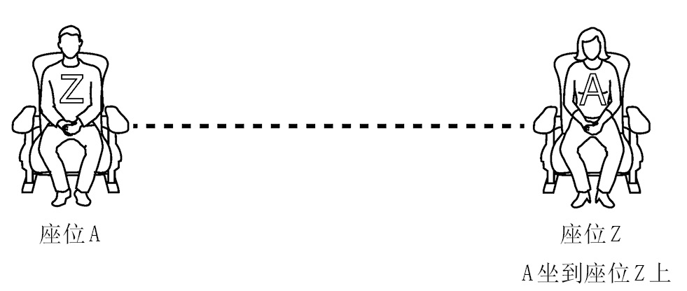
根据题意，A将随机选择座位，因此座位A与座位Z被选中的概率相等。如果只有这两个座位，那么Z坐到自己座位上的概率是50%。
接下来考虑A坐到其他座位上的情况。假设A选择的是N的座位（N在队伍中排第n位）。
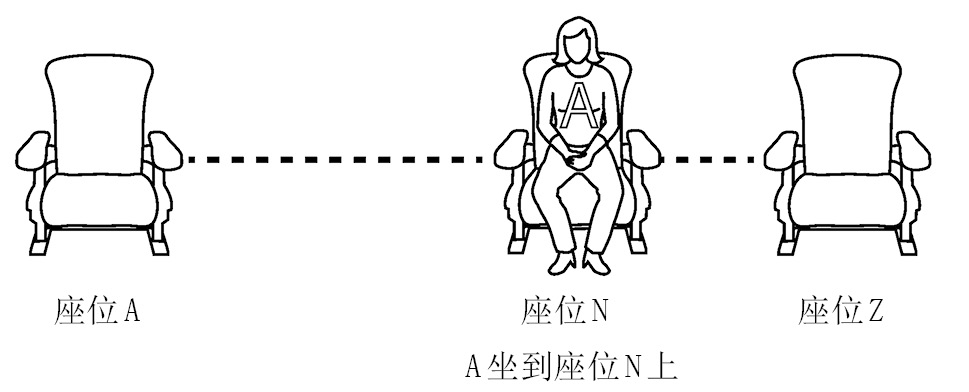
如果A坐在座位N上，那么在队伍中排在N前面的所有人都可以对号入座。N是第一个无法坐到正确座位上的人，因为A占了他的座位。于是，N在剩下的座位中随机选择了一个。
N可以选用的座位包括座位A以及排在他后面的所有人的座位（包括座位Z）。
因此，N可以坐到座位A上（这意味着Z可以对号入座）或者坐到座位Z上（这意味着Z无法对号入座），也有可能坐到M的座位上（M排在N的后面、Z的前面）。
如果只考虑N坐到座位A或座位Z这两种情况（概率相同），则Z对号入座的概率为50%。但是，如果N坐到座位M上呢？
当轮到M就座时，她将面临N之前面临的情况：有可能坐到座位A或Z上（两者概率相同），也有可能会坐在尚未进入剧院的其他人的座位上。如果M坐到尚未入场的其他人的座位上，那么上述情况将再次上演。
在上述每个环节中，所有观众选择座位A与座位Z的概率都是一样的。如果这名观众选择了另外一个人的座位，那么在座位A与座位Z之间的选择权就将顺延给下一个入场的观众。最终，当所有人都入场之后，肯定有一个人必须在座位A与座位Z之间做出选择。
在必须随机选择一个座位时，所有人选择座位A与座位Z的概率都是相同的。既然选择座位A就意味着Z可以对号入座，而选择座位Z则会产生相反的结果，那么Z最终对号入座的概率就是50%。